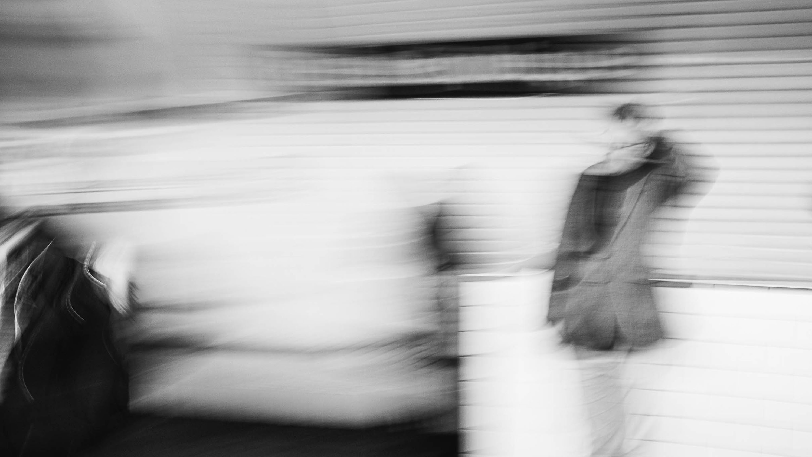

Digital

Originally it’s a sound. A song I was listening to when I was a teenager. The raw energy from The Jam. They were playing loudly and I wasn’t able to understand all of the lyrics. The underground was something I didn’t know yet as I was living in a small town in the west of France.
I will discover it later when arriving in Paris. This souvenir is vividly linked to the first moments of my life as a young adult. The noise, the smell of the Metro in Paris, the rush hours. Something very special.
This series was shot over several months, around 2012, in Paris but also in New York or London for some pictures. I wanted to capture the raw energy from the crowd. The camera is moving with the train or with me walking in the corridors. Everyone is going somewhere, has something to do and I just follow them. Wherever they are going.